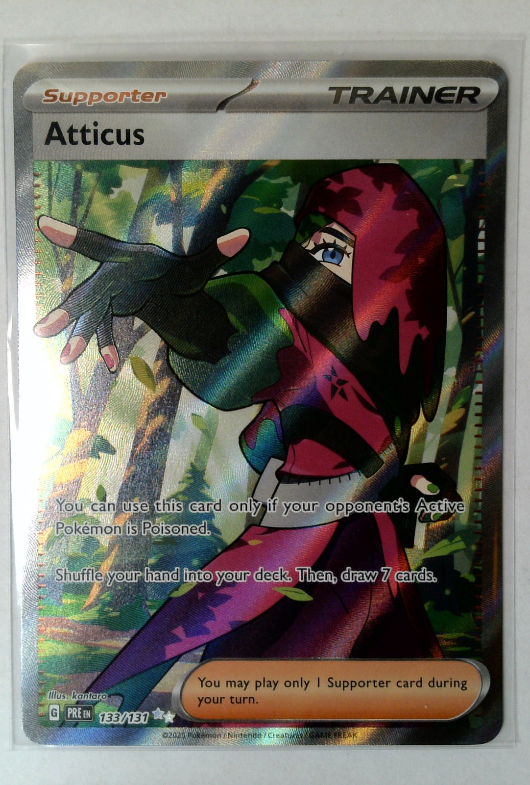
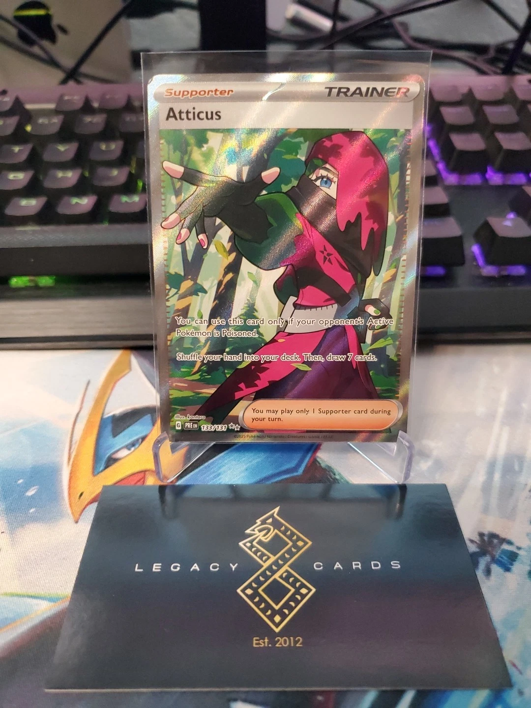
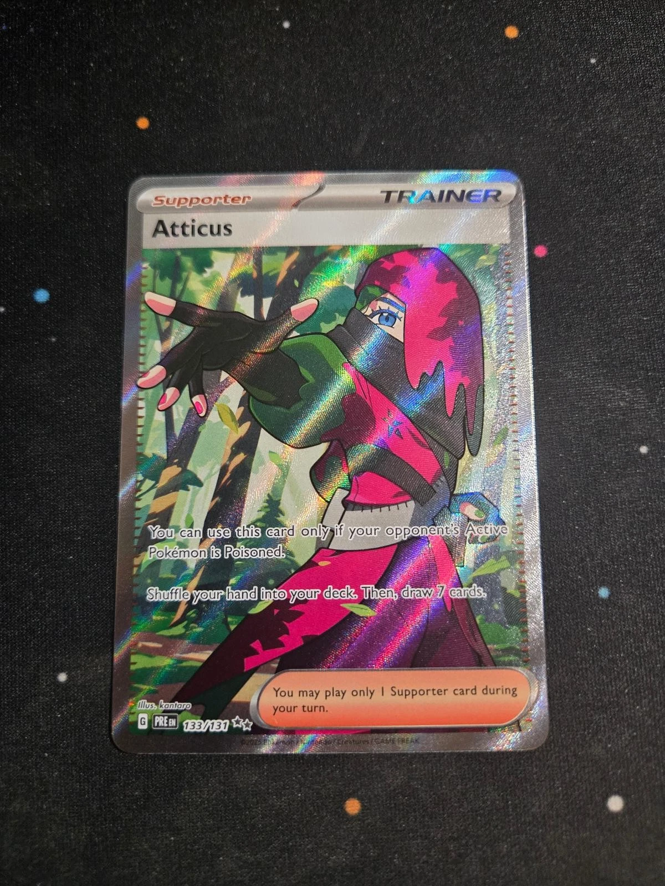
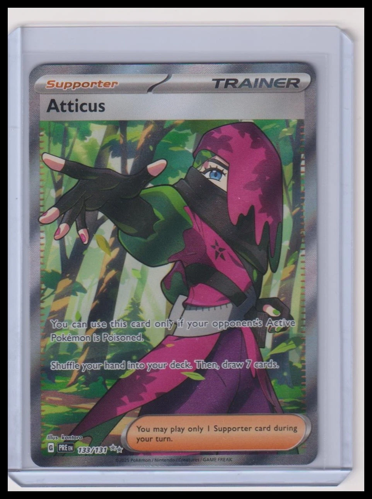
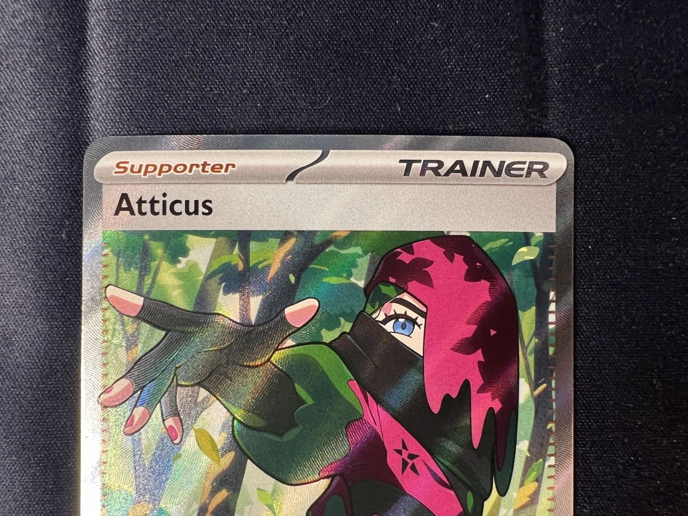
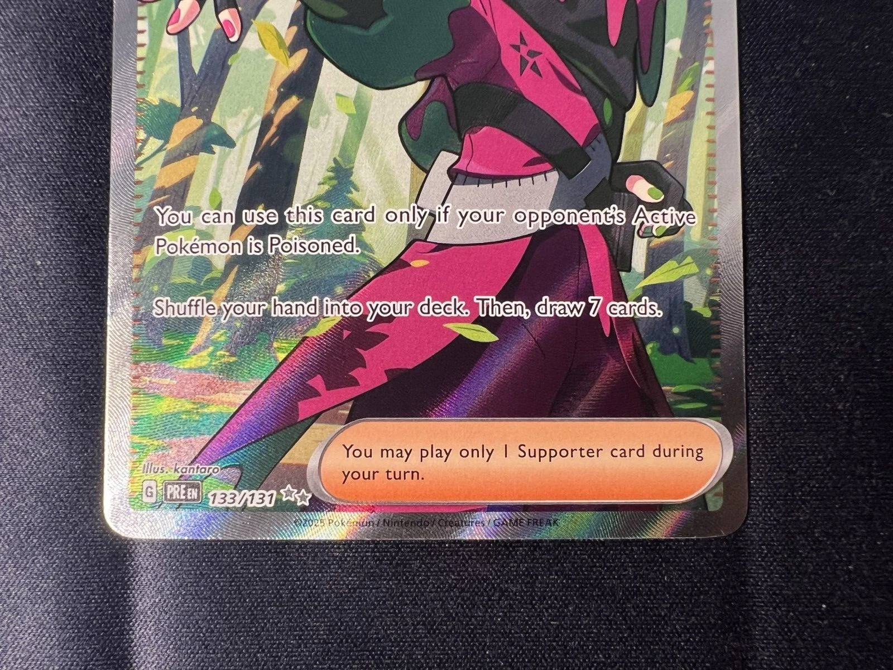

<!doctype html>
<html lang="en">
<meta charset="utf-8">
<meta name="viewport" content="width=device-width,initial-scale=1">
<title>Atticus 133 · Surface authoring</title>
<style>
  :root{color-scheme:dark;font:15px/1.5 system-ui;background:#15171b;color:#e9e9ec}
  [hidden]{display:none!important}
  body{margin:0;padding:28px;display:grid;grid-template-columns:minmax(300px,600px) minmax(230px,340px);gap:32px;justify-content:center}
  .card{position:relative;aspect-ratio:600/825}.card img{width:100%;display:block}
  .coverage{position:absolute;inset:0;background:#ef8b37;opacity:.5;mask-image:url('/cards/pokemon/prismatic-evolutions/maps/133-holo-foil.png'),url('/cards/pokemon/prismatic-evolutions/maps/133-holo-protection.png');mask-mode:luminance,luminance;mask-composite:subtract;mask-size:100% 100%;pointer-events:none}
  .trace-guide{position:absolute;inset:0;background:url('./traces/133-holo-guide.png') center/100% 100% no-repeat;pointer-events:none}
  .controls{display:flex;flex-wrap:wrap;gap:8px}
  .detail{position:relative;width:270px;height:285px;overflow:hidden;border:1px solid #5e6573;border-radius:8px}.detail .card{position:absolute;width:1800px;max-width:none;left:-1005px;top:-540px}
  h1{font-size:25px;line-height:1.2;margin-top:0}h2{font-size:16px;margin-top:28px}
  p,li{color:#bdc1cb}button,select{background:#30343c;color:white;border:1px solid #5e6573;border-radius:7px;padding:10px 14px;font:inherit}button{cursor:pointer}select{display:block;width:100%;margin:8px 0 12px}small{display:block;color:#9ca5b5;margin:8px 0}.detail-readout{font-size:12px;color:#9ca5b5}
  a{color:#a9caff}.status{font-size:13px;color:#e6b779}.references{display:flex;gap:10px;flex-wrap:wrap}.references img{width:90px;height:123px;object-fit:contain;background:#0a0b0d}
  @media(max-width:800px){body{grid-template-columns:1fr;padding:16px}.card{max-width:600px}}
</style>
<div class="card" id="main-card"><div class="coverage" id="coverage"></div><div class="trace-guide" hidden></div></div>
<aside>
  <h1>Atticus 133/131</h1>
  <p>Prismatic Evolutions · full-art Trainer</p>
  <p class="status">Foil and print masks implemented. Etched surface in progress.</p>
  <label for="reference">Compare Atticus photographs</label>
  <select id="reference"><option value="front">Clean print front</option></select>
  <small id="registration-note">Photographs are aligned for comparison only. None is a renderer texture.</small>
  <div class="controls">
    <button type="button" aria-pressed="true" id="toggle">Hide foil coverage</button>
    <button type="button" aria-pressed="false" id="trace-toggle" disabled>Show draft glove traces</button>
  </div>
  <small id="trace-note" hidden></small>
  <p>Orange marks active foil. Skin and the eye interior stay protected; the eyebrow and upper lashes are separate foil regions. Fingertips, printed rule interior, and lettering remain protected. This overlay shows coverage, not the finished optical treatment.</p>
  <h2>Surface detail · 3×</h2>
  <p>Point at the card to inspect a region, then switch photographs to compare the same spot.</p>
  <div class="detail"><div class="card" id="detail-card"><div class="coverage"></div><div class="trace-guide" hidden></div></div></div>
  <span class="detail-readout" id="detail-position">Print coordinates: 380, 228</span>
  <h2>Material implemented</h2>
  <p>The full-art profile is prepared for exact-card normals and foil directions; those maps are still being authored. Procedural engraving, bumps, and sparkle are disabled.</p>
  <h2>Still to finish</h2>
  <p>Resolve the remaining photo gaps, trace the etched surface, generate its coordinated maps, and compare rendered tilts before enabling the printing.</p>
  <h2>Physical references</h2>
  <div class="references">
    <a href="./photos/atticus-133-user-01.png" target="_blank" rel="noreferrer"></a>
    <a href="https://www.ebay.com/itm/128014357348" target="_blank" rel="noreferrer"></a>
    <a href="https://www.ebay.com/itm/278395013449" target="_blank" rel="noreferrer"></a>
    <a href="https://www.ebay.com/itm/800662260600" target="_blank" rel="noreferrer"></a>
    <a href="./photos/atticus-133-j.webp" target="_blank" rel="noreferrer"></a>
    <a href="./photos/atticus-133-k.webp" target="_blank" rel="noreferrer"></a>
  </div>
</aside>
<script type="module" src="./atticus-133-review.js"></script>
</html>
